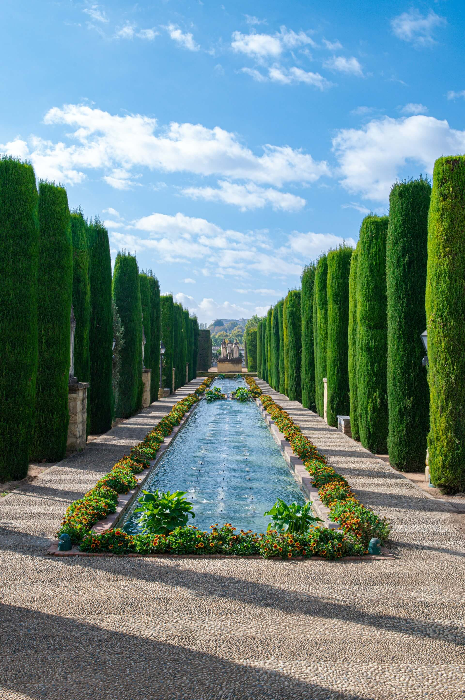
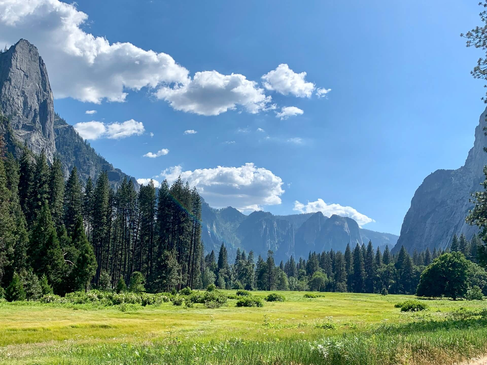

Click on each numbered title below to go to the sheet music.
Classical Pieces
This is one of my favorite calm pieces of music.
I also love the fact that this melody is used in a beautiful French lullabye hymn.
Easy piano arrangements can be printed for free here and here.
Here's a bit of the English translation found here:
Remember, my child : not long ago,
your divine parents held you in their arms.
Today you are here, marvelously present.
Your gaze still shines with the reflection of heaven.
Talk to me, my child, about that blessed place,
because for you the veil is still thin.
Remember, my child, the forests, the cities.
Can we down here imagine them?
And the night sky, is it rosy or gray?
Is the sun waiting for snow or rain?
Describe to me, my child, the color of the meadows
and the birdsongs of a forgotten world.
Remember, my child: at the dawn of time,
we were friends playing in the wind.
Then one day in joy we chose to accept
the Lords great plan of life.
That night, my child, we promised in love,
and in faith, to be reunited.
Here are English lyrics by Lisa Bolin Hawkins:
What do you remember, child, of life before this earth—
When you were a spirit-child before your mortal birth?
Heavenly Parents held you near, not that long ago;
Your eyes still reflect the light from our first holy home.
Search your spirit's memories, before the light grows dim;
Store those visions in your heart while the veil is thin.
Tell me of that blessed place, what do you recall?
Forests, gardens, brooks, and fields? Bright celestial halls?
Rivers falling to the sea; shores where breezes blow?
Flowers like soft jewels in the woods; mountains white with snow?
Is the sunset rosy grey, lighting gates like pearls?
Do lamps beckon travelers home to that forgotten world?
Now do you remember, child, when we lived as friends?
Where we learned our Savior's plan: love that shall not end—
We will work to learn His laws; we gratefully obey.;
There, before the dawn of time, we accepted Him,
That night, my child, we promised in love,
Someday, reunited, we will raise our grateful hymn.
What do you remember, child?
Always remember Him.
Another version with English lyrics and sheet music can be found here.
And finally, here is a video in French and one in English:
Also here.
Also here.
And here.
And here.
And here.
Sheet music with words can be found here And here.
Here are some lyrics from Ode to Joy/Joyful Joyful We Adore Thee:
Joyful, joyful, we adore Thee,
God of glory, Lord of love;
Hearts unfold like flow'rs before Thee,
Op'ning to the sun above.
Melt the clouds of sin and sadness;
Drive the dark of doubt away;
Giver of immortal gladness,
Fill us with the light of day!
All Thy works with joy surround Thee,
Earth and heav'n reflect Thy rays,
Stars and angels sing around Thee,
Center of unbroken praise.
Field and forest, vale and mountain,
Flow'ry meadow, flashing sea,
Singing bird and flowing fountain
Call us to rejoice in Thee.
Mortals, join the happy chorus,
Which the morning stars began;
Father love is reigning o'er us,
Brother love binds man to man.
Ever singing, march we onward,
Victors in the midst of strife,
Joyful music leads us Sunward
In the triumph song of life.
Super famous and overused maybe, but I think it's peaceful and soothing and worth adding it to the mix.
Hymns
This arrangment in the link has lyrics from John 3:16. The tune is also known as the Irish folk song Star of the County Down.
Joyful and bright
Classic
Read about how the lyrics to this hymn came to be here
A famous Welch tune. You can read more about it in wikipedia.
Softly and tenderly
Jesus is calling,
Calling for you and for me.
See, on the portals
He's waiting and watching,
Watching for you and for me.
Come home, come home
Ye who are weary, come home.
Ernestly, tenderly
Jesus is calling,
Calling, oh sinner
Come home!
This hymn's music is from Finlandia by Jean Sibelius. The words were written by Katharina von Schlegal, "Stille, Mein, Wille," and later translated into English. She wrote many hymns, but only this one survived.

The first publication of the words to this hymn are from Pauline T. in 1868, in the New York Observer:
My life flows on in endless song;
Above earth's lamentation,
I hear the sweet, tho' far-off hymn
That hails a new creation;
Thro' all the tumult and the strife
I hear the music ringing;
It finds an echo in my soul—
How can I keep from singing?
What tho' my joys and comforts die?
The Lord my Saviour liveth;
What tho' the darkness gather round?
Songs in the night he giveth.
No storm can shake my inmost calm
While to that refuge clinging;
Since Christ is Lord of heaven and earth,
How can I keep from singing?
I lift my eyes; the cloud grows thin;
I see the blue above it;
And day by day this pathway smooths,
Since first I learned to love it,
The peace of Christ makes fresh my heart,
A fountain ever springing;
All things are mine since I am his—
How can I keep from singing?
Peace Faith Hope Love
in my soul
See another easy arrangement here.
'Tis the gift to be simple
'Tis the gift to be free
'Tis the gift to come down where we ought to be
And when we find ourselves in the place just right
It will be in the valley of love and delight
When true simplicity is gained
To bow and to bend, we will not be ashamed
To turn, turn, will be our delight
'Til by turning, turning, we come round right
1. They heard His voice, a voice so mild.
It pierced them through and made their souls to quake.
They saw Him come, a man in white,
The Savior, who had suffered for their sake.
They felt the wounds in hands and side,
And each could testify:
Chorus:
This is the Christ.
This is the Christ, the holy Son of God,
Our Savior, Lord, Redeemer of mankind.
This is the Christ, the Healer of our souls,
Who ransomed us with love divine.
I read His words, the words He prayed
While bearing sorrow in Gethsemane.
I feel His love, the price He paid.
How many drops of blood were spilled for me?
With Saints of old in joyful cry
I too can testify:
Words by James E. Faust and Jan Pinborough
Music by Michael Moody